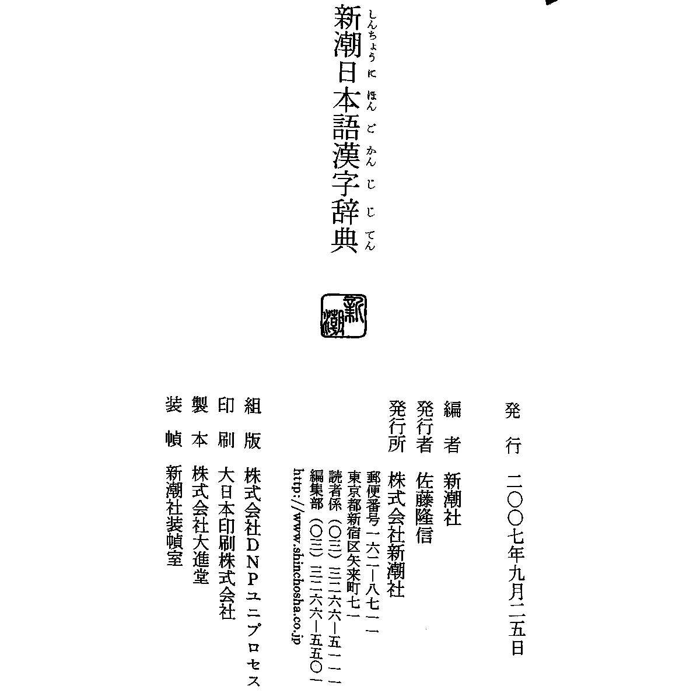
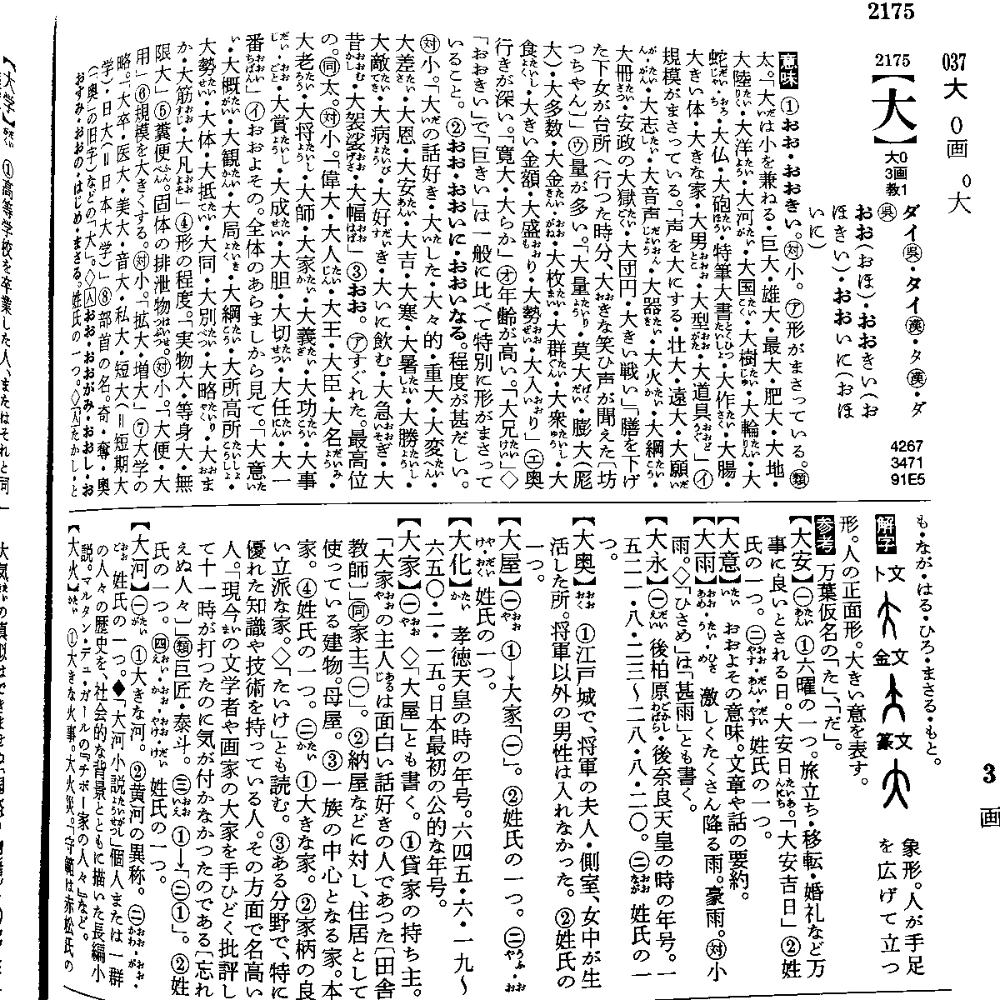
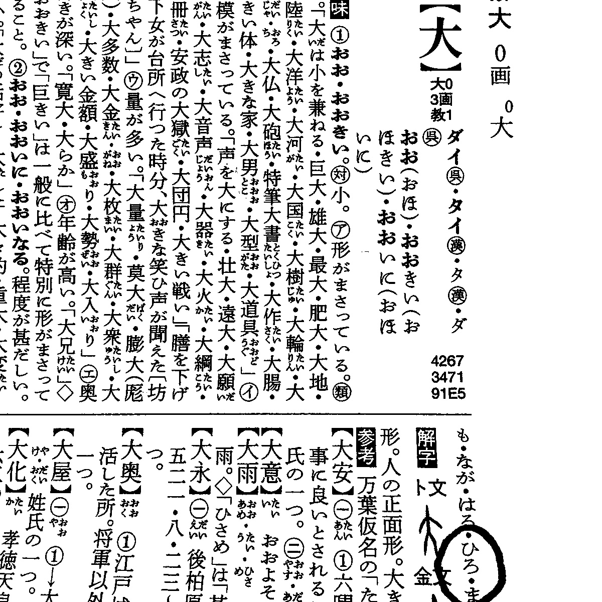
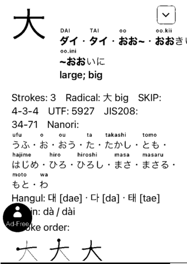

26. 10. 18
https://www.youtube.com/live/BaqbgKASQWo
https://youtube.com/shorts/a7qyuqnHEUo
https://youtube.com/shorts/GcFdzKkv5pg
제가 오늘 쓴 글:
이걸 당신이 모르실 수도 있으니까 하는데요 저는 오는 20일에 구미시를 떠난 후 총 네 곳의 호텔에 묵을 예정입니다. 이건 이상한 소문을 내는 일본 사람들에 승리하기 위해서 좀 복잡한 전술을 써야 하기 때문인데요. 제가 하고 있는 게임은 제가 죽을지 결혼할지에 관한 게임이고 보통 사람이 이해하거나 스스로 할 수 없는 일일 것입니다. 오늘도 잠시 휴식한 다음 저녁 식사를 하겠어요. 안녕히 주무세요 한국인이시고 아마존 KIX3에서 일을 하신 Lee씨, 제가 사랑하는 유일하신 분. 비가 내리고 있으니까 오늘은 DC마트가 아니라 호텔 가까이에 있는 편의점에서 뭔가 사기로 해요 (그 거리에 7-11기 많다면 사람들이 7라는 숫자를 좋아하기 때문일지도 모릅니다) 오늘은 이미 탄수화물을 충분히 먹었으니 술과 술안주만 호텔에서 먹겠습니다 내일 아침은 다시 라면 먹겠어요 https://drive.google.com/file/d/1Aa-HsbDtBI_m_EjFD__V4ZVzLI4WKaim/view?usp=drivesdk 어젠 이걸 받지 않았는데요: https://drive.google.com/file/d/1MpNcsYeqGB88e-SYFfkOgcxBoENmUFeF/view?usp=drivesdk 피차는 교황이 좋아하시는 음식이죠: https://youtu.be/0hv-8A59VMA https://festival.pamp.kr/order/52e0589d-60a5-4929-bacb-78139a7ef1d5 결국 피차 토스트를 샀습니다 https://drive.google.com/file/d/1jsZBNZ13Cqkfn3cTGIbM_yvM0_L1MJnq/view?usp=drivesdk 할 수 없이 어제 사용한 집에 가 보요 미니 (5,000원)입니다 다시 뭔가 삽니다 https://drive.google.com/file/d/1W_T2Bm6AQkyCrPASUNiPu_u1imhRLA0R/view?usp=drivesdk 다시 받을 수 없었습니다 https://drive.google.com/file/d/1rk-xp5CwbCSlmlcF_a15GDFVmGg4rQPX/view?usp=drivesdk 여전히 찾아 있는 중입니다 https://drive.google.com/file/d/1oqx6MNZstaP2V15xzhfASh8jNk-hVvIl/view?usp=drivesdk 납작만두 샀지만 바로 났기 때문에 QR코드 안 받았어요 다시 뭔가 삽니다 https://drive.google.com/file/d/1A6JOkh7DfTxb0N62FicYIidXVSybgjg1/view?usp=drivesdk https://drive.google.com/file/d/1KbaSDDYrdrDg1IfpR6V2BfgvDdPDs-e3/view?usp=drivesdk https://drive.google.com/file/d/1U2DxLm_cvOFULfc0WwbJmpwpDL28ogsp/view?usp=drivesdk Body builder들이 무대 상에 있는데 여자 body builder도 있기 때문에 이상한 소문이 날 수도 있으니 다른 곳을 봐 봅니다 도착했습니다 https://drive.google.com/file/d/1atOx4qvKaoXxoMgFFwCK38ocMObGBKHL/view?usp=drivesdk 호텔 방에서 잠시 휴식한 후 다시 구미 푸드 페스티벌을 보러 갑니다 토스트나 김밥 밖에 싸게 살 있는 일이 있으면 사겠지만 이번은 숫자 신이 장난을 치지 않기를 바랍니다 오후 2시경엔 출발해요 기사식당이 좋다고 알려 주신 분은 전에 언급한 유튜버 분입니다 감사합니다 일단 호텔에 돌아가기로 합니다 이번 한국방문에서 간 식당 중 가장 좋은 식당였어요 할매기사식당입니다 https://www.google.com/maps/place/Gumi,+할매기사식당/data=!4m2!3m1!1s0x3565c0ad5ca9f11f:0xe47f267e004b6730 다 먹었으니까 벌금 0 입니다 https://drive.google.com/file/d/1aV_D0X7GD0vOfCe2tRD95U7nTfksfo6_/view?usp=drivesdk https://drive.google.com/file/d/1p_jB88OuUHMAYsPScuurjsSBmo_pp3D5/view?usp=drivesdk https://drive.google.com/file/d/1Kmv0Rf0mlvX1VcGY149Un6LEf5oa4kYZ/view?usp=drivesdk 뷔페라는 기사식방에 있어요 https://drive.google.com/file/d/1eoACu6yeEN4_ZW8eObGUoOtFoVa5v_pr/view?usp=drivesdk 아직 식당을 찾아 있는 중입니다 아마 비가 내리겠지만 다시 구미역 방면으로 가고 식사를 합니다. 구미 푸드 페스티벌은 역시 오늘도 열릴 것 같으니까 저녁 때 가 봅니다. 그 전에 호텔에 돌아갈 것인데요. 이제 호텔에 돌아가기로 합니다. 구미 푸드 페스티벌은 오늘 정오(오후 0시)에 시작될 수도 있지만 이미 준비를 하고 있는 집도 있었어요. 이 노래집이 가까이에 있어요: https://www.google.com/maps/place/Gumi,+황태자노래주점/data=!4m2!3m1!1s0x3565c0d1c9a28dfb:0xe680fb2e69c90649 구미역에서 도보로 약 40분였습니다 https://drive.google.com/file/d/1WL1HC8lS66BMsDOoe_XLwzbVSna1eZXg/view?usp=drivesdk 지금 구미역에 있습니다. 이가 소용있을 수도 있으니까 지금부터 도보로 구미 푸드 페스티벌 회장으로 가 봅니다. 영상을 호텔에 돌아온 후 냅니다 오늘은 도보로 구미역 방면으로 가고 커피나 사마시겠습니다. 여전히 제가 한국에 있지 않다는 소문이 퍼지고 있을 수도 있으니까 가능한 한 사람이 많은 곳에 갈 생각입니다. 편지에 쓴 일이나 어떻게 쓰레기 같은 소문에 승리할지에 대해선 걸으면서 생각해 보요. 아마 제가 이 거리에 대해 한 말 때문에 이상한 소문이 났을 것이지만 여기에 있는 PC방은 아마 'Zeus vs Hades' 등의 온라인 카지노를 하기 위한 집입니다. 아마 그런 게임을 하기 위한 PC를 가지지 않은 노동자 분들도 오시는 것이라고 상상하고 있는데요. 일본에선 빠찡꼬점라는 유희장이 포퓰러하지만 특히 일본 사람들은 그런 PC방이 한국에 있다고 믿지 않을 것입니다. https://www.google.com/maps/place/Utopia+Motel,+19-4+Songwonseo-ro+6-gil,+Gumi-si,+Gyeongsangbuk-do/data=!4m2!3m1!1s0x3565c732d0796a27:0xb7d57fbd2037b6f3 오늘은 다음 기사를 사용해서 영상을 냅니다. 좀 시간이 필요할 거예요. 프랑스서 생활비·유가 상승 항의 대규모 시위…272명 체포 https://mobile.newsis.com/view/NISX20261018_0003830159 https://drive.google.com/file/d/1Ng1yZQJivQ9K-xkNyOEmMSb2uRfEanQ0/view?usp=drivesdk (5시 반경) 지금 일어났습니다. 너무 일찍 일어났으니까 다시 자기로 합니다 💤 안녕하세요? 이런 일이 한 소문을 해소하기 위해 소용있을 수도 있으니까 쓰기로 하지만 제가 오는 20일까지 있을 구미시(亀尾市 / Gumi City)는 경상북도에 있는 시이고 (동)대구역에서 여기에 가고 싶다면 대경선(大慶線 / Daegyeong Line) 전철을 타면 좋습니다. 서울에서는 아마 KTX 등을 탈 필요가 있을 것입니다. 아마 오늘도 열릴 수 있는 대구 구미 푸드 페스티벌(Gumi Food Festival) 회장에 대해선 이 웹사이트( https://korean.visitkorea.or.kr/kfes/detail/fstvlDetail.do?fstvlCntntsId=d18ca54d-6d78-46c4-a7f6-d6bda804f736 )에 지도가 있는데, 구미IC 가까이에 있는 이 회장은 구미 시민 운동장(Gumi Civic Stadium)을 향해 구미역에서 도보로 가면 한 시간 내에 갈 수 있으면서 ( https://www.google.co.jp/maps/place/Gumi+Civic+Stadium,+375-22+Parkchunghee-ro,+Gumi-si,+Gyeongsangbuk-do/data=!4m4!3m3!1s0x3565c0da1616264b:0x5ab95be3b8b83a42!16zL20vMDZmNmZ6!20s8Q8C4962%2BHXF ) 공식 웹사이트( https://gumifoodfestival.com )가 전하는 버와 같이 버스로 가는 것도 가능합니다. 제가 라면 등을 산 DC마트는 동아백화점 구미점( https://ontrip.kr/travel-guides/details/2909413 ) 가까이에 있는데요. 제가 어제 간 G7 Square( https://namu.wiki/w/G7마트%20구미점 )는 제가 어제 점심 식사를 한 본죽 & 비빔밥의 한 지점( https://blog.naver.com/ybchn0903/223750071319 ) 가까이에 있지만 이 자도( https://www.google.com/maps/place/%EA%B2%BD%EC%83%81%EB%B6%81%EB%8F%84+%EA%B5%AC%EB%AF%B8%EC%8B%9C+%EC%95%BC%EC%9D%80%EB%A1%9C+296+%EA%B3%A0%EB%A9%94%EC%8A%A4%ED%80%98%EC%96%B4+%EA%B5%AC%EB%AF%B8%EC%A0%90/data=!4m4!3m3!1s0x3565b9a435a099ff:0x9480a5f34ef41651!16s%2Fg%2F11fq9r9x5h!20s8Q8C48Q8%2BF33 )를 참고하면 누구라도 갈 수 있을 거예요. 제가 어제 낸 구미 푸드 페스티벌에서 주문했을 때 받은 QR코드( https://festival.pamp.kr/order/60653b2f-e0a6-4d92-8c63-990793270676 ; https://festival.pamp.kr/order/eaceb445-a476-4795-984d-240abdd826c8 )에 대해선 오늘도 열릴 수 있는 이 축제에 오시면 확인하실 수 있을 것입니다. 제가 니시카와(西川)라는 일본 사람을 좋아한 적은 단 한번도 없고 다 이 사람이 낸 거짓입니다. 저는 니시카와와 같은 회사에 있었을 때 왕따를 당하고 있었으니까 복수를 위해서 한 전자 메일을 그 회사에 보낸 적이 있습니다.
호텔 방에서 잠시 휴식한 후 다시 구미 푸드 페스티벌을 보러 갑니다. 토스트나 김밥 밖에 싸게 살 있는 일이 있으면 사겠지만 이번은 숫자 신이 장난을 치지 않기를 바랍니다. 오후 2시경엔 출발해요. 기사식당이 좋다고 알려 주신 분은 전에 언급한 유튜버 분입니다. 감사합니다.
할매기사식당입니다:
아마 비가 내리겠지만 다시 구미역 방면으로 가고 식사를 합니다. 구미 푸드 페스티벌은 역시 오늘도 열릴 것 같으니까 저녁 때 가 봅니다. 그 전에 호텔에 돌아갈 것인데요.
구미 푸드 페스티벌 회장 가까이에 이 노래집이 있어요:
아마 제가 이 거리에 대해 한 말 때문에 이상한 소문이 났을 것이지만 여기에 있는 PC방은 아마 'Zeus vs Hades' 등의 온라인 카지노를 하기 위한 집입니다. 아마 그런 게임을 하기 위한 PC를 가지지 않은 노동자 분들도 오시는 것이라고 상상하고 있는데요. 일본에선 빠찡꼬점라는 유희장이 포퓰러하지만 특히 일본 사람들은 그런 PC방이 한국에 있다고 믿지 않을 것입니다.
안녕하세요? 이런 일이 한 소문을 해소하기 위해 소용있을 수도 있으니까 쓰기로 하지만 제가 오는 20일까지 있을 구미시(亀尾市 / Gumi City)는 경상북도에 있는 시이고 (동)대구역에서 여기에 가고 싶다면 대경선(大慶線 / Daegyeong Line) 전철을 타면 좋습니다. 서울에서는 아마 KTX 등을 탈 필요가 있을 것입니다. 아마 오늘도 열릴 수 있는 대구 구미 푸드 페스티벌(Gumi Food Festival) 회장에 대해선 이 웹사이트( https://korean.visitkorea.or.kr/kfes/detail/fstvlDetail.do?fstvlCntntsId=d18ca54d-6d78-46c4-a7f6-d6bda804f736 )에 지도가 있는데, 구미IC 가까이에 있는 이 회장은 구미 시민 운동장(Gumi Civic Stadium)을 향해 구미역에서 도보로 가면 한 시간 내에 갈 수 있으면서 ( https://www.google.co.jp/maps/place/Gumi+Civic+Stadium,+375-22+Parkchunghee-ro,+Gumi-si,+Gyeongsangbuk-do/data=!4m4!3m3!1s0x3565c0da1616264b:0x5ab95be3b8b83a42!16zL20vMDZmNmZ6!20s8Q8C4962%2BHXF ) 공식 웹사이트( https://gumifoodfestival.com )가 전하는 버와 같이 버스로 가는 것도 가능합니다. 제가 라면 등을 산 DC마트는 동아백화점 구미점( https://ontrip.kr/travel-guides/details/2909413 ) 가까이에 있는데요. 제가 어제 간 G7 Square( https://namu.wiki/w/G7%EB%A7%88%ED%8A%B8%20%EA%B5%AC%EB%AF%B8%EC%A0%90 )는 제가 어제 점심 식사를 한 본죽 & 비빔밥의 한 지점( https://blog.naver.com/ybchn0903/223750071319 ) 가까이에 있지만 이 자도( https://www.google.com/maps/place/%EA%B2%BD%EC%83%81%EB%B6%81%EB%8F%84+%EA%B5%AC%EB%AF%B8%EC%8B%9C+%EC%95%BC%EC%9D%80%EB%A1%9C+296+%EA%B3%A0%EB%A9%94%EC%8A%A4%ED%80%98%EC%96%B4+%EA%B5%AC%EB%AF%B8%EC%A0%90/data=!4m4!3m3!1s0x3565b9a435a099ff:0x9480a5f34ef41651!16s%2Fg%2F11fq9r9x5h!20s8Q8C48Q8%2BF33 )를 참고하면 누구라도 갈 수 있을 거예요. 제가 어제 낸 구미 푸드 페스티벌에서 주문했을 때 받은 QR코드( https://festival.pamp.kr/order/60653b2f-e0a6-4d92-8c63-990793270676 ; https://festival.pamp.kr/order/eaceb445-a476-4795-984d-240abdd826c8 )에 대해선 오늘도 열릴 수 있는 이 축제에 오시면 확인하실 수 있을 것입니다. 제가 니시카와(西川)라는 일본 사람을 좋아한 적은 단 한번도 없고 다 이 사람이 낸 거짓입니다. 저는 니시카와와 같은 회사에 있었을 때 왕따를 당하고 있었으니까 복수를 위해서 한 전자 메일을 그 회사에 보낸 적이 있습니다.
26. 10. 17
제가 오늘 쓴 글:
이제 호텔에 돌아왔습니다. 잠시 휴식한 후 신당리 매운 김밥과 도시락 라면으로 식사를 하겠어요. (이미 토스트 한 개 먹었으니 큰 라면은 내일 아침 먹겠습니다) 내일도 축제를 방문할 경우 오늘과 같은 시각에 저녁 식사를 할 것입니다. 꿀이나 고구마는 구미시 명물의 한가지이랍니다. 안녕히 주무세요 한국인이시고 아마존 KIX3에서 일을 하신 Lee씨, 제가 사랑하는 유일하신 분. DC마트에서: https://drive.google.com/file/d/19fZ8KuEimZx6Lb08jO09h385ujPpz0Vt/view?usp=drivesdk 내일도 열린다니까 내일도 갈 수도 다만 비가 내릴지도 몰라요 이제 호텔에 돌아가는데 가는 길에 마트서 술이나 라면을 사겠습니다 https://drive.google.com/file/d/1Mp5GurXL4yI1HvBxYLDIjh91MZffvUY9/view?usp=drivesdk https://festival.pamp.kr/order/eaceb445-a476-4795-984d-240abdd826c8 왜? https://drive.google.com/file/d/1HtbytuHJg4TDyG3ZJygeLJDcBNQ0gWZP/view?usp=drivesdk 김밥도 비교적 싼 것 같으니까 이걸 포장할 수도 https://drive.google.com/file/d/1xQyOPCEs3-YIE8C75Q9uU51jYGWDRF4j/view?usp=drivesdk https://drive.google.com/file/d/1jC_XAyk-a8r9vMU5PlDL3qBUjhe4kSY8/view?usp=drivesdk 약 십 분 정도 필요할 것 같습니다 https://festival.pamp.kr/order/60653b2f-e0a6-4d92-8c63-990793270676 숫자 신이 다시 장난을 치고 있는 것 같습니다: https://drive.google.com/file/d/1iyLTVEZY0Mmx1t_cquskcfo-qtE70UiJ/view?usp=drivesdk 더 한 시간 정도 있을 수도 있어요 포장에 좋은 용기가 없는 것 같으니까 포장 안할 수도 호텔에 돌아가면 인사를 합니다 https://drive.google.com/file/d/1yO1HhDv7bNrMOjBxDEkc9lRJN3PZ1KFU/view?usp=drivesdk https://youtu.be/i4qIj7An6qA cosplay contest가 시작되었는데요 이상한 소문이 날 수도 있으니 다른 곳을 봐 봅니다 개막식이 시작된 것 같습니다 https://drive.google.com/file/d/1KIG68BetDmUCSo84-d70COg-sQTpL8mQ/view?usp=drivesdk https://drive.google.com/file/d/1hcBH84jGHndCr9LP5vq9mTBnj-zsWWvO/view?usp=drivesdk https://drive.google.com/file/d/15XFUq0soll9qi8tnwj4xp-a9ZjAZ8S80/view?usp=drivesdk https://drive.google.com/file/d/1RwXmGNAYWRqixd0HJtyeVHc6MJ_G6OVT/view?usp=drivesdk 가까이에 이정희 부동산이 있어요: https://drive.google.com/file/d/169WtIhUNGodA5u-E23bZo4aPNHpheoj4/view?usp=drivesdk 아마 도착했습니다 https://drive.google.com/file/d/1bmJCO5wJKRl4LaIaTs4cvQxB1yy9IZDu/view?usp=drivesdk 아마 제가 어제 아침에 간 곳이 아닌 것이니 찾아 있는 중입니다 잠시 휴식한 다음 오후 3시경에 구미 푸드 페스티벌을 보러 갑니다. 뭔가 싸게 살 수 있고 포장될 음식이 있으면 저도 살 수도 있지만 우선 제가 여기에 있다는 걸 수많은 사람들에게 전할 기회가 되니까 하나하나 봐 갈 거예요. 다만 아직 시작되지 않을지도 모릅니다. 지금 산업로의 (가까이에 GS 북구미 IC 주우소가 있는) 이 지점에 있습니다. 오후 1시 15분경 출발했습니다. https://drive.google.com/file/d/1m_RjiAE4CZQLpEwNbmMys_GDXGr7_ejI/view?usp=drivesdk 호텔 가까이에 오면 일단 호텔에 돌아가기로 합니다 잠시 전 개임터서 나왔을 때 양복을 입은 분을 봤는데요 한순간 당신이 아시는 분일 수도 있다고 상상했어요 오후 1시가 되면 호텔 방면으로 돌아갑니다 산업로에 도착하면 다시 연락하겠습니다 가능한 한 산업로의 오른쪽을 통해 갑니다 오후 1시까지 지하 마트를 봐 봅니다 좀 개임을 했습니다 Lee라는 인물이 일본 여자에 승리했습니다 https://drive.google.com/file/d/1oYZigVwacwf7FqAcHYZZGyvRQbYX2mxK/view?usp=drivesdk 다시 G7스퀘어에 가고 한 시간 정도 보내기로 해요 https://drive.google.com/file/d/1nq60cWz01pcXT-BbxJEg3sKX8o7LD_fy/view?usp=drivesdk https://drive.google.com/file/d/1wm5xDWs7nb6aXkhk_MtY3LadTxpEQ16H/view?usp=drivesdk https://drive.google.com/file/d/1CKTEGeiqWnXkkrUw8fOTbck0PldGD9pk/view?usp=drivesdk 결국 본죽 & 비빔밥에서 뚝배기 제육볶음 주문했습니다 식사만 다른 곳에서 할 수도 있습니다 토요일인데 생각보다 사람이 없어요 https://drive.google.com/file/d/1qCAKgGYkuURo5GRtcIdS6Leddfrilrx_/view?usp=drivesdk 도착했습니다 https://drive.google.com/file/d/1_WgG4v66eP14VvZXdtZCyX1wppwuRHeV/view?usp=drivesdk https://drive.google.com/file/d/1V9zglIyJuZmFdW8DGTdn-pfMxsNshLNr/view?usp=drivesdk 아마 일간에 도착할 거예요 https://drive.google.com/file/d/1Upb3R2UwQlAGlh5rVP_BmW3uI7R-xPCf/view?usp=drivesdk 아직 같은 길에 있습니다 https://drive.google.com/file/d/15sgcfxZVZqh0ufk8YhO0yvJAqreVY60B/view?usp=drivesdk 같은 길을 가고 있는 중입니다 https://drive.google.com/file/d/14b_giNXysxjvvtssaoYuLN3QvU5uRQkD/view?usp=drivesdk https://drive.google.com/file/d/1-vzJmlmhmVEoGZkCi7k0t9b7YYN6dSkv/view?usp=drivesdk 아마 산업로라는 길을 가면 되겠으니 이 길을 가 봅니다 G7스퀘어 방면으로 도보로 가 봅니다. 오늘은 토요일이니 사람이 많죠. 역시 새마을 운동이나 유토피아라는 것들이 이상한 소문이 날 원인이 될 수도 있으니까 다른 곳으로 가기로 합니다. 어제 제가 DC마트서 짬뽕라면을 산 건 미국 백악관 대변인과 관련이 있었습니다. 오늘은 도보로 새마을 운동 테마동원에 가 봅니다. 오전 9시 반경에 출발하고 저녁까지 여기에 돌아올 것입니다. 안녕하세요? 어젯밤은 왠지 잘 잘 수 있었습니다. 당신이 걱정하셨을 수도 있으니까 오늘은 고기도 먹기로 해요. 아마 제가 돈을 가지고 있지 않다는 소문이 났을 것이니까 미리 돈을 지불하는 방식의 식당에 가겠지만. 어제 간 이마트 구내 식당은 일식당였을 것 같지만 왠지 2층의 전자 제품 사는 곳에서 들은 BGM가 아직 저의 머리 속에 계속하고 있습니다. 그리고 당신이 이에 대해서도 걱정하셨을 수도 있으니까 앞으론 기독교에 언급하지 않기로 해요. 저는 기독교도가 아닌데 왜 교황의 몸 상태를 걱정했는지 잘 모릅니다. 다음 기사에 의하면 교황이 스스로의 사진을 공개하셨다니까 이미 문제없을 거예요. Pope pictured for first time since surgery and cancer diagnosis https://www.bbc.com/news/articles/cw146ej00yn7o
안녕하세요? 어젯밤은 왠지 잘 잘 수 있었습니다. 당신이 걱정하셨을 수도 있으니까 오늘은 고기도 먹기로 해요. 아마 제가 돈을 가지고 있지 않다는 소문이 났을 것이니까 미리 돈을 지불하는 방식의 식당에 가겠지만. 어제 간 이마트 구내 식당은 일식당였을 것 같지만 왠지 2층의 전자 제품 사는 곳에서 들은 BGM가 아직 저의 머리 속에 계속하고 있습니다. 그리고 당신이 이에 대해서도 걱정하셨을 수도 있으니까 앞으론 기독교에 언급하지 않기로 해요. 저는 기독교도가 아닌데 왜 교황의 몸 상태를 걱정했는지 잘 모릅니다. 다음 기사에 의하면 교황이 스스로의 사진을 공개하셨다니까 이미 문제없을 거예요.
Pope pictured for first time since surgery and cancer diagnosis
https://www.bbc.com/news/articles/cw146ej00yn7o
26. 10. 16
제가 오늘 쓴 글:
오늘도 잠시 휴식한 후 혼밥하고 다 먹은 후 영상을 냅니다. 이 방에 있는 TV 덕분에 저는 한국어를 공부할 수 있으니 감사해야 합니다. 오늘은 어제부터 이 거리에 사람이 많은 것 같지만 아마 금요일 밤엔 모두가 놀러 오시는 거예요. 내일은 축제가 열린다니까 더 사람이 많을지도 모릅니다. 저는 조금만 축제나 보러 갈 수도 있지만 역시 혼밥을 좋아한답니다. 다만 당신과 결혼하면 매일 당신과 함께 식사를 할 생각예요. 다른 식의 에너지를 충전할 수 있을 것이니까. 안녕히 주무세요 한국인이시고 아마존 KIX3에서 일을 하신 Lee씨, 제가 사랑하는 유일하신 분. https://drive.google.com/file/d/1_0mmIFCGIlPR-Ui_2ghX9_9fywzDqtx4/view?usp=drivesdk 당신이 걱정하실 수도 있으니까 저녁용 라면도 사기로 해요 분식집에서 김밥을 샀습니다 https://drive.google.com/file/d/1vnG2IcSlvKRjDpqhzslYeq45MfoBtN18/view?usp=drivesdk 저녁에 먹을 음식을 찾아 산책 중입니다 결국 DC마트서 이걸 샀습니다: https://drive.google.com/file/d/1WKIrlDhaxe-7p9wStM9FAUP-jwMESrbD/view?usp=drivesdk 여긴 식품을 마트처럼 판매하는 층이 없고 Ashley Queen의 치킨은 너무 비쌉니다 이곳에도 동아백학점이 있습니다 https://drive.google.com/file/d/1jW-rFApd8GWXH3fKA8gsz5TMRjfOjm6v/view?usp=drivesdk 잠시 휴식한 후 오늘도 포장 가능 식당 또는 마트서 음식과 술을 사고 호텔에서 먹기로 했습니다. 제가 에너지를 충전하기 위해선 혼자 있는 시간이 필요할 것 같습니다. 일단 호텔에 돌아가기로 해요 https://drive.google.com/file/d/1mSaYK8ldrkWOxu6AMV73AY_LqdZ4i-W7/view?usp=drivesdk https://drive.google.com/file/d/1ATZI_panfQV5phCsjSyE94ZHQP1vAQoh/view?usp=drivesdk 역시 공원에서 먹기로 해요 https://drive.google.com/file/d/1MmL5KiXmdOsqB_NFhTd__QgslQ9uT0Zb/view?usp=drivesdk 12시 반이 되면 지하 층에 가요 https://drive.google.com/file/d/1jvzmcjouuONzYciBKExyxdYLvKaTBq_n/view?usp=drivesdk 정오가 되면 2층으로 갑니다 https://drive.google.com/file/d/1J1v5Wq-9J6oi3ESuXG8LU9f_tVBoQN8c/view?usp=drivesdk https://drive.google.com/file/d/1TOpnkGRf9E1eZR64H8KpgBmy-Ke6wiE2/view?usp=drivesdk 우선 1층부터 봐 보요 도착했습니다 이가 구미점이랍니다 https://drive.google.com/file/d/1BmEh-xExmCeMieTfVkPG8VvwRYQAODKB/view?usp=drivesdk 이마트에 도착하면 하나하나 봐 가고 아마 빵이나 사고 가까이에서 그걸 먹을 것입니다. 한 시간 이상 있게 해 봅니다 역시 이마트 방면으로 이동합니다 우선 하나로마트를 봐 보요 https://drive.google.com/file/d/1R9yHi7n0oyUhZdZlwTof6kws_ucuY8zu/view?usp=drivesdk 잠시 휴식한 후 가까이에 있다는 이마트에 가 봅니다 휴대폰을 충전하기 위해 일단 호텔 방면으로 돌아가기로 해요 https://www.gumiramyun.com 지금 본 TAXI에 '11월 구미 라면 축체'라는 글자가 있었어요 https://drive.google.com/file/d/1ne92nIKu7OYQzGOQeeIWAIcy3pZkzcS7/view?usp=drivesdk 구미역 해장라면 https://drive.google.com/file/d/1A7T78bGctRpuFHyMYnxz2Tx92YSPSy9c/view?usp=drivesdk 이상한 소문에 이기기 위해 뭔가 사먹기로 해요 이걸 봐 보세요: https://drive.google.com/file/d/1yr55JWPJbE0A6-lZaaLTJiYLn8KyDcwE/view?usp=drivesdk 제가 전에 만든 tool: https://anissatta.github.io/home-project/kim4/ 윤 전 대통령의 내란 우두머리 재판은 너무 오래 계속하고 있으니 이미 무죄로 끝났다고 생각하는 사람이 일본에선 많았습니다. 다음에 의하면 드디어 2심이 결심한다니 단지 지연되어 있을 뿐인데요. 서울고법 내란전담재판부는 오늘(15일) 윤 전 대통령의 내란 우두머리 혐의 사건 공판에서 "11월 5일쯤에는 최종의견 진술까지 마칠 수 있지 않을까 싶다"고 밝혔습니다. (10. 15) 尹 내란 2심 이르면 연내 선고…내달 5일 변론종결 https://m.yonhapnewstv.co.kr/news/MYH20261015210149L9a 제가 TV로 본 뉴스는 오는 22일에 판결이 내릴 가능성은 낮다고 하고 있었습니다 15일 법조계에 따르면 대법원 전원합의체는 오는 22일 김 여사의 자본시장과 금융투자업에 관한 법률 위반, 정치자금법 위반, 특정범죄가중처벌법상 알선수재 혐의에 대한 2차 전원합의 기일을 연다. 앞서 대법원은 지난 7월 23일 김 여사 사건을 전원합의체에 회부하고 지난달 29일 첫 전원합의 기일을 진행했다. 대법원 전원합의체는 대법관들만 들어가며, 비공개로 심리를 진행한다. 통상 '전원합의체 심리 절차에 관한 내규'에 따라 전원합의체 심리 기일은 한 달에 한 번, 매월 세 번째주 목요일에 진행된다. 다만 대법원장이 날짜를 변경하거나 추가로 다른 날을 잡아 진행할 수 있다. (10. 15) 대법, 김건희 상고심 전원합의 기일 추가 지정…이달 말 구속 만료 https://www.news1.kr/society/court-prosecution/6321058 그런데 역 TV로 윤 부부에 관한 두 가지 뉴스를 봤습니다 https://drive.google.com/file/d/1y5wCS4mIslqJ7ezOkdknx8jRc6AXH5wT/view?usp=drivesdk 너무 추우니까 구미역 건물 내에 잠시 있겠습니다 잘은 모르겠지만 저의 이번 한국방문도 실패될 것이라는 느낌이 드는데요. 어떻게 하면 될지 잘 모릅니다 일본 사람이 오시기에 좋은 집도 있어요 https://drive.google.com/file/d/1grDqtguMpowpvROT5rT-Io7Ogku5482s/view?usp=drivesdk 같은 날에 다른 축제도 열릴 것이랍니다 https://drive.google.com/file/d/1Yp4sLQ65CAAoUE9I44IcUNIDERuOacqF/view?usp=drivesdk 그대로 구미역 방면으로 가 봅니다 https://gumifoodfestival.com 구미시 시청 앞에 왔지만 포장마차 등은 아직 없는 것 같았습니다: https://drive.google.com/file/d/1CCRx6z8uGDTZG3J4-GldfZgGm1EdvenC/view?usp=drivesdk 오전 7시경에 출발하기로 합니다. 구미시 시청 가까이에 갈 수도 있어요. (내일 저기서 음식에 관한 축제가 열린다니까 이를 위한 준비를 하고 있을 수도 있네) 피로하면 다시 호텔에 돌아올 수도 있습니다. 오늘은 시내를 보기만 하고 다른 시나 교외엔 안 갈 것인데요. 어딘가에서 십자가를 살 수 있으면 살 수도 있습니다. 저는 우리 사이를 방해하고 있는 자가 악령같은 일일 수도 있다고 생각하기 시작했어요. https://drive.google.com/file/d/16SuLaQ3hpUvUf5gEv1wkc_dR8frbn9Oo/view?usp=drivesdk 안녕하세요? 지금 생각해 보니 단지 여기에 묵는 일본 사람이 드물기 때문에 호텔이 호의적으로 저에게 특별실을 제공해 주었다는 것이 사실이게 보입니다. 저는 이 호텔도 일본 에어토리(エアトリ)라는 웹사이트를 통해 예약했지만 에어토리는 Agoda에 부탁한 것 같습니다. 저는 여기에 다섯 밤 숙박하기 위해서 23,480엔 지불했으니까 하룻밤 4,696엔입니다. 제가 어제 묵은 대구 Midtown Hostel는 하룻밤 4,787엔 했으니까 좀 이상하네요. 어제 편의점 사장님이 저에게 라면기 사용방법은 알려 주셨는데 (제가 저음에 사용한 일은 컵라면을 위해선 안되었습니다) 저는 여기엔 좋은 사람이 많다고 생각하기로 했습니다. 이제 아침밥을 먹고 편지를 쓰겠습니다.
안녕하세요? 지금 생각해 보니 단지 여기에 묵는 일본 사람이 드물기 때문에 호텔이 호의적으로 저에게 특별실을 제공해 주었다는 것이 사실이게 보입니다. 저는 이 호텔도 일본 에어토리(エアトリ)라는 웹사이트를 통해 예약했지만 에어토리는 Agoda에 부탁한 것 같습니다. 저는 여기에 다섯 밤 숙박하기 위해서 23,480엔 지불했으니까 하룻밤 4,696엔입니다. 제가 어제 묵은 대구 Midtown Hostel는 하룻밤 4,787엔 했으니까 좀 이상하네요. 어제 편의점 사장님이 저에게 라면기 사용방법은 알려 주셨는데 (제가 저음에 사용한 일은 컵라면을 위해선 안되었습니다) 저는 여기엔 좋은 사람이 많다고 생각하기로 했습니다. 이제 아침밥을 먹고 편지를 쓰겠습니다.
26. 10. 15
제가 오늘 쓴 글:
오늘 여기에 올 동안에 고양이를 봤는데요 이 고양이는 저를 봤는데도 도피하지 않았으니까 뭔가 좋은 일이 이어나겠다는 느낌이 들었습니다. 저는 부산이나 대구부터 이런 지방도시에 있을 때 마음이 편안하는데요. 당신도 아마존 KIX3에서 일을 하셨으니까 저와 같을지도 모르네요. 보안 상 시골이 더 좋다고도 할 수 있을 것입니다. 오늘은 김밥과 막걸리로 혼밥 해요. 안녕히 주무세요 한국인이시고 아마존 KIX3에서 일을 하신 Lee씨, 제가 사랑하는 유일하신 분. 충무김밥 포장했습니다 https://drive.google.com/file/d/10ybfTTEYzZ-8TMiLx7vgSHxfl1N8jlry/view?usp=drivesdk 제가 말한 특수한 집란 PC방입니다 드림마트서 이것만 샀습니다 저녁식사를 위한 집은 이제 찾습니다 https://drive.google.com/file/d/1DU4K0EO_BjeZr0I56atFES3cjAYa4qVX/view?usp=drivesdk 좀 밖을 산책하고 마트가 있으면 술이나 음식을 살 것입니다. 없을 경우 싸게 먹을 수 있는 식당에 갈 수도 있어요 제가 언급한 유튜버 분이 내신 영상: https://youtu.be/-yP2sK9kBnA 지금 체크인했습니다. 사장님이 좋은 분이시고 특별실을 제공해 주셨으니까 온돌실이 아닌 방이 되었습니다. 아시는 바와 같이 제가 일본 사람과 함께 여기에 왔다는 소문은 나지 않을 것이지만 다른 소문이 났을 것이라고 보입니다. 걱정하시면 한번 확인해 보세요. (구미시에 있는 U호텔인데요) 다시 문서를 확인했는데 체크인 시간은 호텔 방침에 따르다고 하니까 한번 가 봅니다 https://drive.google.com/file/d/14zuvMcUP161eieIHcd_Q01Ta7VaRYbxj/view?usp=drivesdk 다른 곳으로 가고 가능한다면 웹사이트를 갱신합니다 https://drive.google.com/file/d/1H-9bW5mxXuAGZVLJCxaZ-vCaONPLoy8T/view?usp=drivesdk (7-11에서) 보리차는 1+1로 무료로 받았습니다 https://drive.google.com/file/d/1rFyp_3n-FiIRVSgl30Je4Wrg96fwkyb0/view?usp=drivesdk 가까이에 점심 할 수 있는 집이 없는 것 같으니 다시 편의점이나 갈까요 간단하게 식사를 한 후 공원이나 가고 휴식합니다 체크인은 이번에도 오후 3시이랍니다 https://drive.google.com/file/d/13ktQ5p5kJrs1a3lVUCQd_3DIL1XrA5yt/view?usp=drivesdk 지금 PC방이 많이 있는 거리에 있습니다 https://drive.google.com/file/d/1piNge07dWJM8LvFWGk7WGutmMgLufkxV/view?usp=drivesdk 11시경 도착했습니다 https://drive.google.com/file/d/1Q5DD6aRzqAsl5bQYZ9v2aU0BPZeO-a5o/view?usp=drivesdk 10시 10분경에 동대구역을 출발했습니다 이번은 일반열차입니다 https://drive.google.com/file/d/1Z3rMswzXOQBTT2Ig3sRW-MP1J1QLKsK-/view?usp=drivesdk https://drive.google.com/file/d/1ri9hQUB6BzI0gt5sD04h8Hi-Vgsz79V6/view?usp=drivesdk 길을 잘못해서 동대구 가까이에 왔으니까 바로 동대구역에 갑니다 대구역 가까이에 이동합니다. 오늘 아침 제가 먹은 라면은 오젯밤에 본 드라마에 등장했는데요 https://drive.google.com/file/d/1KO-wNEeUBpu5dGg7RTarUQMQk9j5C0at/view?usp=drivesdk https://drive.google.com/file/d/1CrIZ6mN_oJtnv9EQaVQ5fJZyjnzcL6Ym/view?usp=drivesdk https://drive.google.com/file/d/1_y-cft04cWQf4LIAEbg8Pe9d-pnEvHIV/view?usp=drivesdk 오전 일곱 시 반까지 외출할 수 없는 것 같으니까 아침밥은 그 시각 이후 하기로 합니다. 그리고 이 방에서 술을 마시면 안되었을 것 같지만 어젯밤에 한 건 비밀입니다 ㅎㅎㅎ 안녕하세요? 제가 지금까지 해 온 이상한 일들을 여기서 봐 볼 때 저의 일본에서의 거주지에 문제가 있었다는 느낌이 듭니다. 제가 그 아파트에 삼 년 이상 살고 있었을 동안에 그 지역에 저를 감시하는 체제가 만들어진 것 같은데요. 잘은 모르겠지만 단지 저를 감시하는 사람이 많이 살고 있다는 사실이 비과학적인 식으로 저의 상태에 나쁜 영향을 주었을 수도 있다고 생각합니다. 그리고 저는 저기에 살고 있는 일본 사람이 정말로 무식한지 무식하지 않는지 잘 모르지만 뉴스 특히 한국 뉴스에 관해서 구들이 거의 아무 것도 모른다는 건 사실이게 보입니다. 제가 말해 온 윤 전 대통령이 위증죄나 범인도피죄, 공짜 여론조사 수수 사건에 관해 무죄를 선고 받았을 때에 아이들까지 저에게 해를 주려고 했다는 말은 정말입니다. 물론 여기엔 그런 아이들이 없는데요. 저는 제가 김건희에 대해 말해 온 것도 이런 환경 때문이라고 생각하기 시작했습니다. 그래서 제가 전에 김건희에 관해 쓴 글(GitHub에 있는 것)은 삭제하기로 합니다. 김건희를 봉인(封印)하는 자는 제가 아니라 김건희의 확정형을 선고하는 조희대 대법원장이나 전원합의제 대법원관 분들입니다. 전에 다음과 같은 기사가 났는데요 당신이 김건희 석방에 반대하시는지 잘 모르니까 저는 앞으로 이 일에 언급하지 않기로 했습니다. 우선 아침밥을 사러 나가고 오늘의 일정을 계획하겠습니다. 김건희 석방 반대 64.3%·ARS도 56.7% (여론조사꽃) https://www.topstarnews.net/news/articleView.html?idxno=16244485
제가 언급한 유튜버 분이 내신 영상:
안녕하세요? 제가 지금까지 해 온 이상한 일들을 여기서 봐 볼 때 저의 일본에서의 거주지에 문제가 있었다는 느낌이 듭니다. 제가 그 아파트에 삼 년 이상 살고 있었을 동안에 그 지역에 저를 감시하는 체제가 만들어진 것 같은데요. 잘은 모르겠지만 단지 저를 감시하는 사람이 많이 살고 있다는 사실이 비과학적인 식으로 저의 상태에 나쁜 영향을 주었을 수도 있다고 생각합니다. 그리고 저는 저기에 살고 있는 일본 사람이 정말로 무식한지 무식하지 않는지 잘 모르지만 뉴스 특히 한국 뉴스에 관해서 구들이 거의 아무 것도 모른다는 건 사실이게 보입니다. 제가 말해 온 윤 전 대통령이 위증죄나 범인도피죄, 공짜 여론조사 수수 사건에 관해 무죄를 선고 받았을 때에 아이들까지 저에게 해를 주려고 했다는 말은 정말입니다. 물론 여기엔 그런 아이들이 없는데요. 저는 제가 김건희에 대해 말해 온 것도 이런 환경 때문이라고 생각하기 시작했습니다. 그래서 제가 전에 김건희에 관해 쓴 글(GitHub에 있는 것)은 삭제하기로 합니다. 김건희를 봉인(封印)하는 자는 제가 아니라 김건희의 확정형을 선고하는 조희대 대법원장이나 전원합의제 대법원관 분들입니다. 전에 다음과 같은 기사가 났는데요 당신이 김건희 석방에 반대하시는지 잘 모르니까 저는 앞으로 이 일에 언급하지 않기로 했습니다. 우선 아침밥을 사러 나가고 오늘의 일정을 계획하겠습니다.
김건희 석방 반대 64.3%·ARS도 56.7% (여론조사꽃)
https://www.topstarnews.net/news/articleView.html?idxno=16244485
26. 10. 14
제가 오늘 쓴 글:
저는 왠지 이번 한국방문도 소문을 해소하기 위해 거의 소용없을 것이라는 느낌이 듭니다. 그리고 저는 왜 제가 일본에 있었을 때 저렇게도 김건희에 대한 뉴스에만 언급했는지 잘 모릅니다. 한국 분들을 실제로 봐 보니 제가 상상하고 있던 '김건희 석방으로 내란 세력이 다시 힘을 받을 것이라고 해서 온 국민이 걱정하고 있다'는 사태는 단지 저의 망상였을 것 같습니다. 오늘은 술이나 마시고 (어제도 마셨지만) 내일부터 처음에 당신을 만났을 때처럼 할 수 있을지 시도해 봅니다. 오늘 처음처럼을 마실지는 미정입니다. 안녕히 주무세요 한국인이시고 아마존 KIX3에서 일을 하신 Lee씨, 제가 사랑하는 유일하신 분. https://drive.google.com/file/d/1TrEyLcrcWzhqCsJ-papLX6D7XfmY4v05/view?usp=drivesdk 체크인하면 잠시 휴식한 후 저녁에 먹는 음식을 사러 가요. 제가 어제 부암역 가까이에 있는 병원의 사진을 찍거나 오늘 대구 약령시에 있는 건 법왕이 입원하신 것과는 무관합니다. 제가 이번에 묵을 호텔을 경정했을 땐 그런 뉴스가 나지 않았다고 저는 기억하고 있는데요. 제가 오늘 묵을 호텔엔 어제 묵은 곳과 같은 방도 있는 것 같지만 제가 선택한 방은 한 사람 용 침대가 한 대 있답니다. 제가 처음과 마지막에 묵을 호텔에 캡슐 호텔을 선택한 건 처음에 그런 식의 곳에 묵으면 그후가 어떤 곳이라고 해도 문제없겠고 마지막에 묵을 호텔도 중요하지 않겠다고 생각했기 때문입니다 https://drive.google.com/file/d/1yBrmeVv4N7V1PZ0PMtFj51IXtHk7FJsL/view?usp=drivesdk 체크인 가능 시간까지 오래 있고 왠지 모르지만 여기에 있는 것이 한 소문을 방지하고 있다는 느낌이 드니까 오후 1시가 되면 동아 백화점에서 음료나 산 다음 다시 현대 백화점 앞에 한 시간 정도 있기로 합니다 https://drive.google.com/file/d/1EFK7T-BagOe3KlUd7Sx1Nks5LJ1hodwd/view?usp=drivesdk (12시 반경) 좀 낮잠을 자고 기분이 좋아졌지만 더 한 시간정도 여기에 있을 것입니다 시간을 쓸 줄 모르기 때문에 현대 백화점 앞에 있기로 합니다 사람이 많으니까 식사 후 밖에 나왔어요 https://drive.google.com/file/d/1v8uHbLKcrNs8uHd8LR1IWx7Vo91_GOCI/view?usp=drivesdk https://drive.google.com/file/d/1_1nOElvB9D7SSv9Ejq87GZJ93tX1JZB8/view?usp=drivesdk https://drive.google.com/file/d/1JEA9ok-aqbvNcoGoxFIl0wBAeO1ta8yQ/view?usp=drivesdk 휴식중 뭔가 주문할 수도 https://drive.google.com/file/d/1Azhi2cnhHgW01FBE4LcwblwAAXXbTvpL/view?usp=drivesdk 너무 시간이 있으니까 동아 백물점라는 곳에 가 봅니다 Counter에 전화기가 있었으니 문의해 봤지만 (저는 일본에서 예약한 미야지마라고 합니다. 언제부터 체크인할 수 있을까요) 역시 3시 (3 PM)이랍니다. 좀 빨리 갔다고 해도 체크인할 수 있을지도 모르니까 점심밥을 먹은 후 한번 가 볼 생각입니다 이가 아침(?)밥입니다 https://drive.google.com/file/d/140B5w0Ooit0PzP4yMF0GL2my1oXzxsgl/view?usp=drivesdk 그 다음 영상은 오후 3시경에 호텔에 체크인한 후 내기로 합니다 시간이 있으니 웹사이트에 영상을 내 봅니다. 반 시간 정도 기다려 주세요 https://drive.google.com/file/d/1JQQWgQ7ZKP4upSplZ-LVBEARONMJJmdC/view?usp=drivesdk 대구역에 도착했습니다 https://drive.google.com/file/d/13TolPWCFYLtpv4Ifua2p5qwAmrZOeCzG/view?usp=drivesdk https://drive.google.com/file/d/1OVYmH2DI0ZifCx5uo6q9AUpT9jUXuWI3/view?usp=drivesdk https://drive.google.com/file/d/1hh3YwFxxVZCrruMo1vYunGMDXgXe9WJ3/view?usp=drivesdk https://drive.google.com/file/d/1wV5ljOEAXmLLxmNkG-wSPK7tczvLAwX0/view?usp=drivesdk 이걸 타요: https://drive.google.com/file/d/1GTZufv5DAWJAxAYN9fYgiLnKHxDz-oM2/view?usp=drivesdk 역시 바로 역에 가기로 해요 https://drive.google.com/file/d/1-CzTNQtRD4WRdqyxj6GoZkOaHwxO_8wM/view?usp=drivesdk 부산역에 도착하면 대구로 가는 전철을 타기 전에 좀 가까이를 걸어 볼 수도 있습니다 첫차가 언제 올진 잘 모르지만 구내에 갈 수 있었습니다. 저는 이 역의 이름을 미리 알고 있었다면 다른 호텔을 예약했을 거예요. https://drive.google.com/file/d/18D_DNH-KksNNmRhifsEm2_KSnXTQaOm0/view?usp=drivesdk 웹사이트는 다음 호텔에 체크인한 후 갱신하겠습니다. 그 전에는 이 파일을 통해 소식을 전합니다 https://drive.google.com/file/d/1aKSPBeLWyxtAQszvS8CCf1snaNAzeLD2/view?usp=drivesdk
안녕하세요? 편지에 쓴 '당신이 기뻐하신 느낌'란 지금 퍼지고 있을 수 있는 소문과는 무관합니다. 아마 당신은 제가 한국인이신 당신이 아니라 일본 사람을 좋아하고 있다고 오해하셨죠? 만약 그런 오해가 해소되었다면 진짜 좋은 일이단 말예요. 역시 여기선 절 쉴 수 없으니까 이른 아침에 출발할 생각입니다.
웹사이트는 다음 호텔에 체크인한 후 갱신하겠습니다. 그 전에는 이 파일을 통해 소식을 전합니다:
https://drive.google.com/file/d/1aKSPBeLWyxtAQszvS8CCf1snaNAzeLD2/view?usp=drivesdk
26. 10. 13
제가 오늘 쓴 글:
국밥1등입니다 https://drive.google.com/file/d/1gz5EQyNlLjSEd1aU-oIvJFCXCKq32mO1/view?usp=drivesdk https://drive.google.com/file/d/1xYvZg1spMtlBxntOdZYXSducE6v18qJ3/view?usp=drivesdk 국밥집에 왔어요 https://drive.google.com/file/d/1n_W0AW3Q7Hqh4s-aW9MbVIz0qEj_8Rbt/view?usp=drivesdk 잠시간 휴식한 후 식사를 하러 가요. 호탤에 돌아오면 다시 웹사이트에 영상을 냅니다. 안녕히 주무세요 한국인이시고 아마존 KIX3에서 일을 하신 Lee씨, 제가 사랑하는 유일하신 분. Check-in했어요 https://drive.google.com/file/d/1vFQu3_9HSQLtzXDOF5VzdX3mMD6AOBEm/view?usp=drivesdk https://drive.google.com/file/d/15FPLZ06NMbVQLEpsE8WYGucVe0DRq5nK/view?usp=drivesdk 바로 호탤에 가요 https://drive.google.com/file/d/1spuf8Hlj7A5JF56A9oPd0D02M6ZtYs3G/view?usp=drivesdk 이건 샀어요. 경전철 타는 곳에 가요 https://drive.google.com/file/d/1xyO1Z-ZXWBX7h90m7o__E58ImA7i8l6U/view?usp=drivesdk https://drive.google.com/file/d/1okkb-XX6pqJcMwEuyv4t8Y03WVIJ4ljm/view?usp=drivesdk https://drive.google.com/file/d/1CSaM6_UUUwm-kqluEb-e6jFUTaAlKmZ0/view?usp=drivesdk 일본 사람들이 불평을 하고 있으니 이가 이상한 사태일 수도 있습니다 통할 수 있는 문이 너무 적기 때문에 더 반 시간 정도 필요될 수도 있습니다 여기선 무료Wifi를 쓸 수 있는데요 아직 대장 내에 있습니다 비행기에서 여기엔 버스로 왔지만 비가 내린 후의 상태이고 날씨는 좋았습니다 그리고 사진금지이랍니다 외국인 여권 사람은 대장 같은 행렬을 통해 문에 가야 합니다 한 시간 필요될지도 모릅니다 오후 1시경에 김해에 도착했습니다 검역터에 사람이 않이 있습니다 https://drive.google.com/file/d/1SnhGQl3QXSvSPK_LmohNW9fZvm7C1tfi/view?usp=drivesdk 이제 타겠습니다 https://drive.google.com/file/d/1MmL_PNiLohcma6dgpK0npYRbZEMO_cpB/view?usp=drivesdk https://drive.google.com/file/d/1BGDiqES7TKvun7QZdroUAjODX_5u5nXZ/view?usp=drivesdk https://drive.google.com/drive/folders/1ElZOhRmwQd5bwMjLMf2C7O7MrZZquF37 https://drive.google.com/file/d/1LBrQXRO3LG2DC-Mgh4Moa2hCN3i5iIc5/view?usp=drivesdk 이제 출발터에 가요 정말로 35번 출구입니다 https://drive.google.com/file/d/1SFcGoaV35M4IIk-OfEqrmhOgjaKmbZ_B/view?usp=drivesdk (Check-in counter앞에서) 다른 분들은 여권을 가지지 않고 단지 가방을 내기 위해 기다려 있는 것 같으니 아마 다른 식으로 checkin할 수 있었을 것이라고 보이지만 저는 여기서 checkin하기로 해요. WAON카드를 사용해서 이걸 샀는데요. 저는 맥도날드서 WAON카드를 사용한 건 처음이니까 언제 이 이력이 날지 잘 모릅니다. (아시는 바와 같이 이력이 날 때까지 이틀이나 사흘 필요될 경우도 있습니다) https://drive.google.com/file/d/1ASEfAjEDgLG-X5-XiBYVa1XADnaNedCP/view?usp=drivesdk https://drive.google.com/file/d/1tb79OHlJg6o5uo5v-bU8O1hF1x-_d1a9/view?usp=drivesdk 좀 휴대폰을 충전한 다음 다른 층도 봐 보요 제가 타는 Easter는 여기선 Self-checkin기가 없습니다 우선 환전을 했습니다 https://drive.google.com/file/d/1pHUc9OfR6yZQfPfvGJVNr1u-A0OMcT_H/view?usp=drivesdk https://drive.google.com/file/d/18kUImrQ9dghXK2GluAw1J7QkOzSHG2QN/view?usp=drivesdk 오전 9시에 가면 될 것 같습니다 https://drive.google.com/file/d/1QQDNeK_nbZ3BpjfreW5TtAfV4HP-4rNT/view?usp=drivesdk https://drive.google.com/file/d/117-sFac-rhDmz7UoyCN8S33c8J4ZlLA0/view?usp=drivesdk https://drive.google.com/file/d/1S4Q3PGas03BXLqqzYUz4lZmyhjBjaU9Q/view?usp=drivesdk 안녕하세요? 우선 라면을 먹고 편지를 씁니다. https://drive.google.com/file/d/1LoK2huNhYwCoUcIMVjwyhnYEw8Mst2pd/view?usp=drivesdk
제가 한국에 있는 동안엔 다음을 대신 보시길 바랍니다:
https://belong2korea.web.fc2.com/
안녕하세요? 우선 라면을 먹고 편지를 씁니다.
https://drive.google.com/file/d/1LoK2huNhYwCoUcIMVjwyhnYEw8Mst2pd/view?usp=drivesdk
26. 10. 12
저녁 식사:
https://drive.google.com/file/d/138RCs5esGw8iZzsKaUZf6Ob7YTlR-laO/view?usp=drivesdk
이 정보가 소용있을지 잘 모르겠지만 지금 소문을 내고 있을 수 있는 한 일본 사람(N)은 직무 상 저의 히로스게라는 이름을 알 수 있었습니다. 당신이 이걸 모르기 때문에 비극이 일어났다고 해도 저는 걱정하지 않고 그대로 죽을 거예요. (한국이나 중국•대만 분들이 일본 사람의 이같은 이름을 너무 비현실적이라고 보실 수도 있다는 건 저고 이해하고 있습니다) 그런데 내일부터 한국에서 잘 여행을 즐길 생각입니다. 이번 한국방문 첫날엔 캡슐 호텔에 묵지만 그 다음날엔 대구에 가는데요. 다른 일정이나 상세한 일에 대해선 앞으로 알려 드리겠습니다. 잠시 휴식한 다음 저녁 식사를 하겠어요. 안녕히 주무세요 한국인이시고 아마존 KIX3에서 일을 하신 Lee씨, 제가 사랑하는 유일하신 분.
Masahiro Tanaka (田中 将大, Tanaka Masahiro; born November 1, 1988) is a Japanese professional baseball pitcher for the Yomiuri Giants of Nippon Professional Baseball (NPB).
https://en.wikipedia.org/wiki/Masahiro_Tanaka
大貴 = Hirotaka
https://tokyo-greatbears.com/news/6893/
https://ja.wikipedia.org/wiki/小田嶋大貴
大晃 = Hiroaki
https://www.jsports.co.jp/volleyball/japan_men/player/1039/
基大 = Motohiro
https://www.photorait.net/studio/200092/photographer/5676
将大 = Masahiro
https://npb.jp/bis/players/11215114.html
昂大 = Takahiro
https://npb.jp/bis/players/01205137.html
大海 = Hiromi
https://npb.jp/bis/players/51355153.html
直大 = Naohiro
https://www.fansaka.info/player/J244O0/
만약 당신이 다음과 같은 책이나 Casio Ex-word 등의 일본어 전자 사전을 가지시면 한번 조사해 보시길 바랍니다.




(Wifi spot에서) 당신이 모르실 수도 있으니까 이 기사를 소개합니다:
法務省は観光産業の活性化を図るため、一時免除期間を1年間延長することを決定しました。免除期間は2026年12月31日（KST）まで有効です。 * 延長されたK-ETA一時免除期間：2026年1月1日（木）～2026年12月31日（木）（韓国時間） 現在K-ETAが免除されている国・地域は、この延長対象となります。免除対象者は、申請時にパスポート情報ページの写真をスキャンするとポップアップメッセージが表示されます。
K-ETA一時免除延長に関するお知らせ
https://www.k-eta.go.kr/portal/board/viewboarddetail.do?bbsSn=299710
大 = hiro
https://tangorin.com/kanji/%E5%A4%A7
大輔 = Hirosuke
東京都港区の公共住宅でエレベーターの戸が開いたまま急上昇し、高校2年の市川大輔（ひろすけ）さん（当時16）が死亡した事故から、3日で16年を迎えた。
港区エレベーター事故から16年 なくならぬ戸開走行に遺族「焦り」：朝日新聞
https://www.asahi.com/sp/articles/ASQ635V2HQ62UTFL01P.html
저의 GitHub 어카운트명인 'anissatta'는 'nissatta'라는 Pali어 속의 말에 부정을 의미하는 접두사인 'a'를 추가해서 만들어진 이름입니다. 이 'nissatta'는 다음과 같이 'soulless'로 번역되니까 저의 anissatta라는 어카운트명은 'soulless하지 않음'을 의미한답니다.
nissatta : (adj.) soulless.
Nissatta, Niṣatta, Nishatta: 8 definitions
https://www.wisdomlib.org/definition/nissatta
점심 식사:
https://drive.google.com/file/d/1YoxYQyMgJqAATBgloOVDUVrh2YHjgnQ9/view?usp=drivesdk
(Lawson에서) 전에도 같은 일이 일어났으니 거짓일 수도 있지만 할 수 없이 Ministop으로 이동합니다:
https://drive.google.com/file/d/18TLI_Y1p33FgIss2gIoXTEy0ktihTpfS/view?usp=drivesdk
가까이에 있는 サンディ라는 마트를 봐 봤지만 한 사람용 한국산 김치는 없는 것 같았으니 할 수 없이 김치 없이 먹겠습니다.
여긴 오래 오지 않을 것이니까 특별히 이 영상을 냅니다:
https://drive.google.com/file/d/1DFOt8-n6SgqY2oNT8GsbAWiW0oDJNMeO/view?usp=drivesdk
오늘은 이런 재료로 부대찌개를 끓이고 점심•저녁 때 먹겠습니다. 내일 아침은 그 찌개 국물으로 라면을 끓이고 먹겠어요:
https://drive.google.com/file/d/1PIr9qy2GKeCRsnJpdXRLRvPcbiodKUzy/view?usp=drivesdk
아마 현금이 더 필요할 것이니까 환전하겠습니다.
https://drive.google.com/file/d/1hUu0XvuZOTkutdQVL4CqvxnckckRaQ9o/view?usp=drivesdk
오늘의 부엌 영상:
https://drive.google.com/file/d/1cixT9sB5Lb2KxGvc5CNLKfC7J9xN-Bmb/view?usp=drivesdk
https://drive.google.com/file/d/1uDM9bwTQgJ3kXkYqWbMQ_a9JzaunFZeq/view?usp=drivesdk
[오늘의 날씨] 울산(12일, 월)…구름 많음, 낮 최고 26도
https://www.news1.kr/local/ulsan/6316058
아침 식사:
https://drive.google.com/file/d/1RJqrdVsXyw-xT0-A7spZlT30Tr1wagFF/view?usp=drivesdk
오전 1시경에 다시 자겠습니다 💤
미리 말한 바와 같이 오늘은 아침밥을 여기서 먹겠어요(제가 전에 고려대학교에 간 건 당신이 졸업하셨기 때문이고 김건희와는 무관합니다):
https://drive.google.com/file/d/18ok9gCeUPIzv9S5t1ZX7RWVpRZPbuNPd/view?usp=drivesdk
그런데 제가 이란에 대한 뉴스에 언급하지 않은 건 단지 트럼프 대통령이 미국 중간선거가 일어날 오는 11월 3일까지 이란을 공격하지 않겠다고 말하셨기 때문이고 이란 전쟁이 끝났기 때문이 아닙니다. 저는 여전히 파병에는 반대합니다.
In a Truth Social post on Thursday, the US president said Washington was “having productive discussions with the Islamic Republic of Iran”, which he claimed was “in very bad condition, both Economically and Militarily”. The strait of Hormuz, through which roughly a fifth of the world’s oil and liquefied natural gas passed through before the war, was all but closed after the US and Israel struck Iran in late February. On Thursday, however, Trump suggested that oil was moving through the strait in record volumes: “22 Million Barrels, last night alone”, he claimed, “with not one barrel coming from, or going to, Iran”. The figure could not be independently verified. “We will not be attacking Iran at any time prior to the Midterm Elections to be held in the United States on November 3rd,” Trump wrote. “IRAN WILL NOT HAVE A NUCLEAR WEAPON!”
(10. 8) Trump promises not to attack Iran before November’s US midterms
https://www.theguardian.com/us-news/2026/oct/08/trump-iran-pause-attack-midterms
안녕하세요? 이상한 느낌이 들어서 이런 시각에 일어났습니다. (실은 소음이 났을 수도 있지만 그런 걸 말하면 여기에 살고 있는 사람들이 제가 한국에 가고 싶지 않기 때문에 불평을 하고 있다고 해서 저를 더 심하게 박해할 것이니까 이상한 느낌이라고만 형용했 왔습니다) 한 사람이 왔기 때문에 다른 소문이 났을 수도 있으니까 역시 뉴스에 대해서 말하기로 했는데요. 하지만 부엌 영상엔 역시 날씨 뉴스를 사용하기로 합니다. (아마 당신은 그 이유를 아셨을 것인데요) 어제 말한 '법원이 김건희에 대해 추가 구속영장을 발부할 것'이라는 저의 관측이 너무 낙관적였을 수도 있네요. 매관매직 사건에 관해 추가 구속영장이 청구될 가능성 자체에 대해선 다음 기사도 언급하고 있습니다. 오늘도 오전 10시경에 마르야스에 가는데요. 내일은 아침에 공항에 가야 하니까 마르야스에 가는 건 없을 것입니다.
윤석열 전 대통령의 배우자 김건희씨가 이달 말 구속기간 만료로 석방될 가능성이 거론되고 있다. 도이치모터스 주가조작과 통일교 금품수수, 명태균 여론조사 무상수수 의혹 사건이 대법원 전원합의체에 회부되면서 상고심 선고가 지연되고 있기 때문이다. 김씨의 구속기간은 오는 10월 31일 만료된다. 11일자로 20일 남았다. 이때까지 대법원의 확정판결이 나오지 않고 별도 사건에서 추가 구속영장이 발부되지 않으면 김씨는 불구속 상태에서 재판을 받게 된다. (중략) 문제는 이후의 재판 진행 속도다. 전원합의체 회부 결정 이후 두 달 넘게 실질적인 심리 일정이 잡히지 않았다. 대법원은 지난 9월 29일에야 첫 전원합의기일을 열었다. 이날 김씨 사건과 함께 한덕수 전 국무총리, 이상민 전 행정안전부 장관의 내란 관련 사건도 심리했다. 김씨 사건의 다음 심리 일정이나 선고기일은 아직 공개되지 않았다. 대법관 공석 문제도 재판 지연의 배경으로 거론됐다. 당시 대법원은 대법관 두 명이 공석인 상황에서 전원합의체 운영에 어려움을 겪었다. 김성수 대법관이 합류하면서 공석은 한 자리로 줄어들었다. 현 구성으로도 전원합의체 심리와 선고는 가능하다. 앞으로의 선고 시점은 대법관들이 주요 법리 쟁점에 대해 얼마나 신속하게 의견을 모으느냐에 달렸다. (중략) 특검은 기존 사건의 구속기간 만료 전에 선고가 어려울 것으로 판단되면 매관매직 사건에서 별도의 구속영장 발부를 요청하는 방안을 검토하고 있다. 법조계에서도 서로 다른 공소사실을 근거로 추가 구속영장을 발부하는 것은 가능하다는 견해가 나온다. 매관매직 사건에서 항소심까지 징역 5년의 실형이 선고됐다는 점을 고려하면 추가 영장이 발부될 가능성이 높다는 관측도 제기된다. 추가 영장 발부가 자동으로 이뤄지는 것은 아니다. 해당 사건을 담당하는 재판부가 도주 우려와 증거인멸 가능성, 구속의 필요성 등을 판단해야 한다. 기존 사건의 구속기간이 끝난다는 이유만으로 다른 사건의 구속기간까지 소멸하는 것도 아니다. 현재의 전원합의체 심리 진행 상황을 고려하면 김씨 사건의 확정판결이 구속 만료일을 넘길 가능성을 배제하기 어렵다. 대법원이 기한 내 선고를 한다면 상황은 달라진다. 관건은 두 가지다. 대법원 전원합의체가 10월 31일 이전에 김씨 사건의 결론을 내릴 것인지, 특검이 매관매직 사건에서 추가 구속영장을 요청하고 대법원이 이를 발부할 것인지다. 전원합의체 회부 당시부터 제기됐던 구속기간 만료 논란이 현실적인 문제로 다가오면서 법원의 판단에 관심이 쏠리고 있다.
김건희, 10월 말 석방될까
https://weekly.khan.co.kr/article/202610111945001
26. 10. 11
저녁 식사:
https://drive.google.com/file/d/18zu-XhfZl5jY3dYyuJtEFoc30RTSz3dE/view?usp=drivesdk
좀 휴식한 후 애호박 돼지고기 찌개나 끓이고 먹겠습니다. 내일은 한국방문 준비에 집중해야 하니까 아침밥 영상만 내고 점심밥과 저녁밥은 사진 또는 간단한 영상만 내기로 해요. 안녕히 주무세요 한국인이시고 아마존 KIX3에서 일을 하신 Lee씨, 제가 사랑하는 유일하신 분.


https://drive.google.com/file/d/1LU_33jkLT6ixm4qwbpAn2J9-aWqg5TO0/view?usp=drivesdk
https://drive.google.com/file/d/1SK7klI4FGxkFGa6nP8LdLW6dchurWYL2/view?usp=drivesdk
Shit:
https://drive.google.com/file/d/1gTQMXayed6qltQaW1brqugIhu_jB_zcx/view?usp=drivesdk
https://drive.google.com/file/d/1ku8PAGgl5j6QrGQPaAqoV0AAAjM2Gebb/view?usp=drivesdk

점심 식사:
https://drive.google.com/file/d/1v4tH8tkgWbI-Z63XKEyM9AokWWo4QMEk/view?usp=drivesdk
오늘도 특별히 이 영상을 냅니다(이 흐르카와라는 사원은 전에 없던 사람인데요):
https://drive.google.com/file/d/13eph5mjmyw0O7fKkLgtfnzEz9ppHlcur/view?usp=drivesdk
https://drive.google.com/file/d/151miOT-Onv5HlegU_9gPrxaXvTL9LqsC/view?usp=drivesdk
PS: 당신이 걱정하실 수도 있으니까 오늘 점심 후 고노미야에 갈 때 우선 천 엔만 선불카드에 충전하기로 합니다.
어제 쓴 바와 같이 저는 한국으로 출발하기 전에 냉장고를 비우고 전원도 끌 생각입니다. 그리고 다음 기사에 있는 것과 같이 제가 살고 있는 지역(牧田町（1棟～58棟・79棟～103棟）)에서는 가연성 쓰레기를 월요일 아침에 내야 합니다. 저는 이런 이유로 내일 아침 식사할 때에 냉장고 내 식품들을 다 먹고 내일 점심•저녁 그리고 한국으로 출발할 날인 오는 십삼 일 아침엔 라면과 한 사람용 김치나 사먹을 것입니다.
https://www.city.takatsuki.osaka.jp/garbage-day/search/search.php?kana=%E3%81%BE&search=1
이가 한 종류의 소문을 방지하기 위해 소용있을 수도 있으니까 내기로 합니다. (이 일정 내에 '김건희'라는 이름이 없었지만 저는 나경원이나 한학자 같은 사람도 좋아하지 않아요)
13일(화)
서울고법, ‘공직선거법위반 혐의’ 윤석열 전 대통령 항소심 3차 공판(오전 10시)
서울중앙지법, ‘특수공무집행방해 혐의’ 나경원 국민의힘 의원 외 3명 1차 공판준비기일(오전 11시)
서울고법, ‘특정경제범죄가중처벌등에관한법률위반(횡령) 등 혐의’ 한학자 통일교 총재 외 3명 항소심 1차 공판(오후 2시)
14일(수)
서울중앙지법, ‘직권남용감금 등 혐의’ 등 윤석열 전 대통령 외 11명 22차 공판(오전 10시 10분)
15일(목)
서울고법, ‘내란우두머리 등 혐의’ 등 윤석열 전 대통령 외 7명 항소심 21차 공판(오전 10시)
16일(금)
서울고법, ‘일반이적 등 혐의’ 등 윤석열 전 대통령 외 3명 항소심 10차 공판(오전 10시)
서울고법, ‘일반이적 등 혐의’ 등 윤석열 전 대통령 외 3명 항소심 11차 공판(오후 2시)
(이번주 법조 일정) 10월 12일~16일
https://www.lawtimes.co.kr/news/articleView.html?idxno=227545
다음 기사에 의하면 '공판준비기일은 본격적인 심리에 앞서 검찰과 피고인 측의 입장을 확인하고 증거조사 계획 등을 논의하는 절차로, 피고인의 출석 의무는 없다'니까 나경원 등이 이번주 법원에 출석할 가능성은 거의 없을 것이라고 보입니다. 다만 이상한 소문이 날 수도 있으니 조심하세요.
11일 법조계에 따르면 서울고법 형사13부(고법판사 김무신 이우희 유동균)는 오는 13일 오후 2시 정치자금법 위반 등 혐의로 기소된 한 총재와 정원주 전 통일교 비서실장, 윤영호 전 통일교 세계본부장희 항소심 첫 공판기일을 연다. (중략) 같은 날 윤 전 대통령에 대한 체포영장 집행을 방해한 혐의로 기소된 국민의힘 의원들의 재판도 시작된다. 서울중앙지법 형사합의35부(부장판사 백대현)는 13일 오전 11시 특수공무집행방해 혐의로 기소된 나경원·김기현·권영진·윤상현 국민의힘 의원의 첫 공판준비기일을 진행한다. 공판준비기일은 본격적인 심리에 앞서 검찰과 피고인 측의 입장을 확인하고 증거조사 계획 등을 논의하는 절차로, 피고인의 출석 의무는 없다.
'정교유착' 한학자 2심 이번주 시작…'尹 체포방해' 국힘 의원 첫 재판[주목, 이주의 재판]
https://www.news1.kr/society/court-prosecution/6314981
오늘의 부엌 영상:
https://drive.google.com/file/d/1I_RXxNhstPsxL_Ej_EgrfKLFH2PVPi6O/view?usp=drivesdk
https://drive.google.com/file/d/1CqrBJ8q-3u-DRE7H9d2tCLCbDf8lsRIM/view?usp=drivesdk
[오늘의 날씨] 부산·경남(11일, 일)…오후 경남 내륙 5~10㎜ 소나기
https://www.news1.kr/local/busan-gyeongnam/6315644
저의 부모가 지금 살고 있는 주소는 그들이 다시 이사를 안 갔다면 다음과 같이 '大阪府 八尾市 東太子 1-5-30'일 것이니까 만약 제가 부모의 집에 있다는 소문이 퍼지고 있다면 우선 이 주소를 조사해 보시길 바랍니다. 저의 의모는 아들이 두 명 있지만 제가 알았을 땐 다 뚱뚱한 사람였으니까 혼동되지 않을 것입니다.
https://anissatta.github.io/amp/
안녕하세요? 이상한 느낌이 들어서 이런 시각에 일어났는데요. 어제 오후 일곱 시경에 저의 방 초인종을 두 번 누른 사람이 있었지만 어젯밤엔 소음을 내는 오토바이가 거의 없었으니까 아마 저의 이 일에 대한 추측은 맞았을 것입니다. 저의 사랑을 우롱하는 자는 다 벌을 받아야 합니다. 오늘도 오전 10시경에 마르야스에 가고, 점심 후에 다시 다이에이 가기로 합니다. 이번은 저기에서 돌아올 때 뿐만 아니라 저기에 갈 때에도 고노미야서 뭔가 사겠습니다.
오전 2시경에 다시 자겠습니다 💤
26. 10. 10
저녁 식사:
https://drive.google.com/file/d/1jZFFmauKLRdf_-wn8m5uglT7ZHlEiSgW/view?usp=drivesdk
좀 휴식한 후 김치볶음밥을 만들고 그걸 먹겠습니다. 안녕히 주무세요 한국인이시고 아마존 KIX3에서 일을 하신 Lee씨, 제가 사랑하는 유일하신 분.
저는 오늘 여러 가지 휴대폰을 가지고 왔는데 여기서 처음으로 사용한 휴대폰에서는 SSID를 찾을 수가 없고 직접 SSID를 입력했을 때에도 이같이 가입할 수 없었습니다. 전에 여기서 사용한 적이 있는 휴대폰은 잘 Wifi에 가입 가능했습니다. 아마 이런 일 때문에 난 소문도 있었을 것입니다.

만약 이런 일 때문에 소문이 났다면 한법 당신의 휴대폰에 직접 이 SSID를 입력해 보세요. 이 SSID가 존재하지 않는지 SSID가 있는데도 가입할 수 없는지 아실 수 있을지도 모르니까.
(Wifi spot에서) 서울고법이 지금 공개 중인 재판 영상에 윤 전 대통령의 모습이 없기 때문에 난 소문도 있을지도 모릅니다.
이 공판은 2026노1560 사건이고, 법원명은 서울고등법원이고, 피고인명은 윤석열입니다. 다음 절차에 따라 한번 조사해 보시길 바랍니다. (이 사건 공판에 김용현만 피고인으로서 출석한 적이 전에도 있는데요) PS: 내란 우두머리 사건의 사건번호는 2026노648입니다.
https://anissatta.github.io/home-project/kim3/
저도 조사해 봤지만 '2026.10.02 피고인 윤ㅇㅇ 출석'이라고 합니다. 그래서 다시 영상을 봐 보니 윤 전 대통령은 늦게 출석하고 있습니다. 시작부터 약 일 분 후입니다.
https://youtu.be/L4XHWMMZLo4?t=77
https://drive.google.com/file/d/1g3YtnMK4QzNzwDca6p4tB0VcX2_ujjcj/view?usp=drivesdk
이제 다이에이에 가서 무료 Wifi를 사용해 한국방문을 위한 조사 등을 해 봅니다. 돌아오는 길에 고노미야서 술을 살 수도 있어요.
점심 식사:
https://drive.google.com/file/d/1RXeQI2Wh22E7xJGz3Y7tYh0UAkZwRf_H/view?usp=drivesdk
오늘은 특별히 이런 영상도 냈습니다.
https://drive.google.com/file/d/1bkIVEGszLTUNEYlzfIRLsnVmnvdVr_29/view?usp=drivesdk
https://drive.google.com/file/d/1ENnoQCAscu0jb6FSZvqTP2DFn3S_MP0z/view?usp=drivesdk
(再揭) クロネコヤマトについてもう一度書いておくと、噂を流していたと思われる契約社員(灰色の制服を着た社員)は関西ゲートウェイ(茨木にあるセンター)にて私が派遣社員として夕方から午後10時頃まで働いていた際に、クールでないフロアのA(アルファ)ブロックにいた方です。私が韓国のLeeさんと結婚した場合にどのような仕事をするのかは分かりませんが、場合によってはクロネコヤマトが困ることになるかも知れません。最近気になっているのはクロネコヤマトのドライバーの方々です。恐らく私が買い物等に出かける時刻は把握されていると思いますが、あまりに頻繁に見かけるので本来の業務指示を無視して私を偵察しに来ているのではないかとも思います。
오늘의 부엌 영상:
https://drive.google.com/file/d/198Wzap_gXGep-BvscJmh9JZB1ex3wsAP/view?usp=drivesdk
https://drive.google.com/file/d/1-kSVnEPzodDKIU_Bly1Uu2unHGanNJIR/view?usp=drivesdk
Dow Jones Industrial Average (^DJI) (Close: 현지 시간 9일)
https://finance.yahoo.com/quote/%5EDJI/
안녕하세요? 이상한 느낌이 들어서 이런 시각에 일어났습니다. 제가 이번 한국방문을 위해서 다섯 이상의 호텔을 예약했다는 걸 모르면서 처음과 마지막에 묵을 곳에 대해서만 미리 안 사람이 있었다면 제가 자살할 것이라는 소문이 났을 것이니까 이에 대해서 설명해 봅니다. 제가 이런 방식을 선택한 건 첫째로 온 일정을 위해 방을 싸게 제공할 수 있는 호텔이 없고 비교적 장기간 묵을 수 있는 곳에도 작은 침대가 없을 경우가 많았고, 둘째로 만약 제가 선택한 곳 같은 싸게 이용할 수 있는 호텔이 좋지 않을 경우 오래 있는 것에 좀 걱정이 있었고, 셋째로 제가 다른 사람과 함께 가는 것 아냐는 소문을 방지하거나 호텔에 대해 배려할 필요도 있었기 때문입니다. 제가 예약한 방은 다 한 사람 침대만 있거나 온돌실이지만 한 이유로 호텔이 다른 방을 제공할 가능성도 있을 것입니다. 제가 쓴 방식으론 이런 리스크를 적게 할 수 있습니다. 그리고 미리 말한 바와 같이 저는 이번에 다른 지역에도 가는데 서울에는 안 가겠습니다. 아직 김건희에 관한 소문이 퍼지고 있는 것 같으니 이런 일 때문입니다. 오늘도 오전 10시경에 마르야스에 가겠지만 몸 상태를 유지하기 위해서 평소보다 돈을 쓰고 영양가 있는 음식이나 살 거예요.
어제 제가 요도강(淀川)에 그 구두를 내려놓을 때의 영상(히라카타 대교(枚方大橋)엔 전부터 순찰차가 많았답니다):
https://drive.google.com/file/d/1BJ4QYMFDXdflrEMdJXSC3c1Wqeqbthqp/view?usp=drivesdk
https://drive.google.com/file/d/1kysd-96YNJQ1HOU5FuQU1yMAFevMPptT/view?usp=drivesdk
오전 2시경에 다시 자겠습니다 💤
26. 10. 9
냉장고에 있는 파스타면은 오늘 처분하고 내일부터 대한민국으로 출발할 날까지 더 한국인처럼 식사를 하기로 합니다. 안녕히 주무세요 한국인이시고 아마존 KIX3에서 일을 하신 Lee씨, 제가 사랑하는 유일하신 분.
https://drive.google.com/file/d/1BJ4QYMFDXdflrEMdJXSC3c1Wqeqbthqp/view?usp=drivesdk
안녕하세요? 어젯밤에 꾼 꿈 속에서 '한 일본 사람의 친척까지 해를 주러 올 수도 있다'는 느낌이 들었습니다. 오늘도 오전 10시경에 마르야스에 가요.